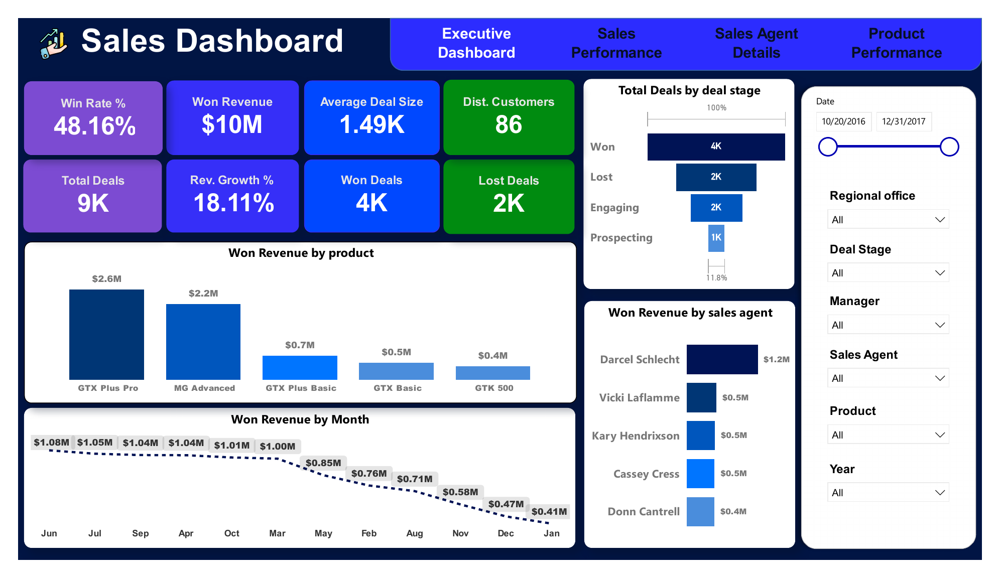

1 / 4Power BI
Sales Performance Dashboard
Which products, agents and regions drive won revenue?
- 48.16% win rate across 9K deals, with $10M in won revenue spread evenly by region (West 35.7%, Central 33.4%, East 30.9%).
- Revenue follows deal volume more than closing rate. Top earner Darcel Schlecht ($1.2M) is not in the five best win rates, which Reed Clapper leads at 65.4%.